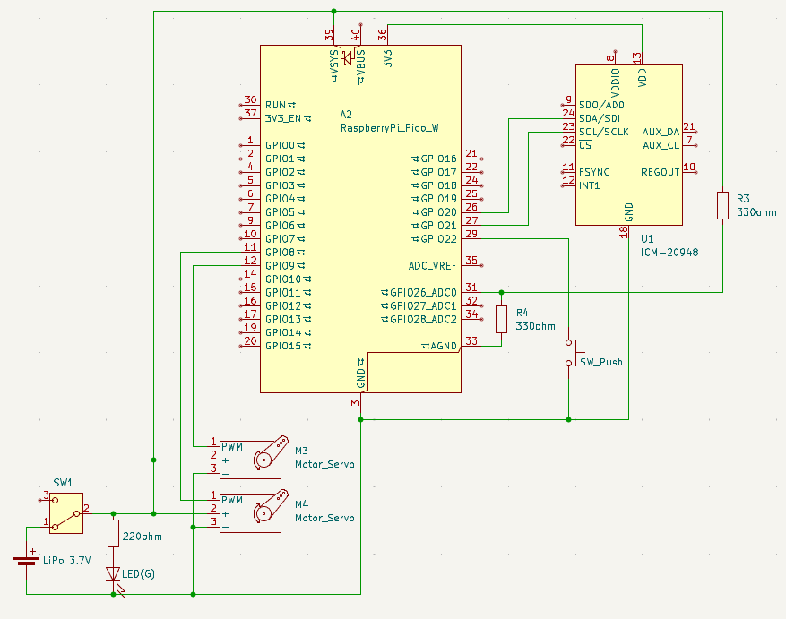
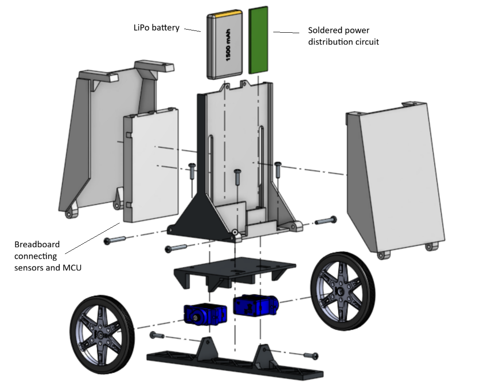
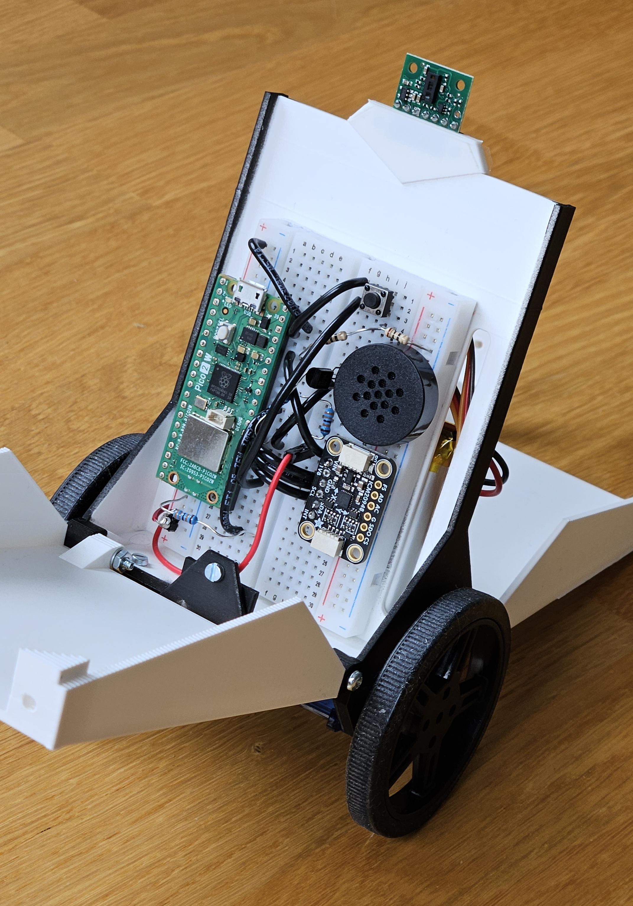

A two-wheeled robot that I designed, manufactured and programmed during a summer break.
The bot uses a PID-controller with combined accelerometer and gyroscope data to stay in
balance. Tuning of the PID was done eyeballing, for the purpose of which I made a Tkinter
GUI application that is used to send the desired parameters to the microcontroller via
Bluetooth.
The first prototype was built by just attaching the electronics and servos to a piece of
cardboard but the second iteration features my customly designed, 3D-printed hull. Two
continuous-rotation servos were chosen for the drivetrain because of their high torque
and internal speed control.
Surprisingly a single 3.7V LiPo cell is enough to power the servos even though
their nominal voltage is between 4.8V to 6.0V.
Two more cascading PID-controllers are used to control driving speed and heading angle,
which are requested from a remote control UI. Visible on the top is a time-of-flight sensor
that is for now used to stop movement before any collision. However, I'm exploring
how to implement autonomous movement using that for obstacle detection and the accelerometer
combined with a magnetometer for rough inertial mapping.
Source code (MicroPython) in
my GitHub


The first proof-of-consept assembly

What it has eaten